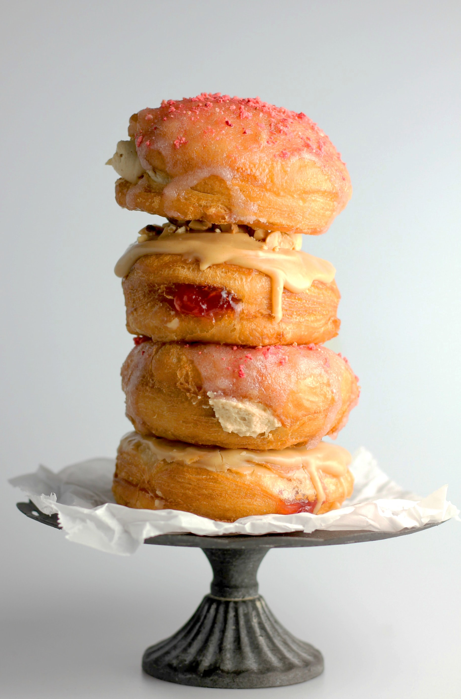

Have you ever made a doughnut from scratch?
Yeah, but have you really thought about it?
For instance, if you put the icing on before deep frying it, it wouldn't work.
Or if you forget to fill it then it's messed up aswell.
Ring ding ding daa baa
Baa aramba baa bom baa barooumba
Wh-wha-what's going on-on?
Ding, ding
This is the Crazy Frog
Ding, ding
Bem, bem!
Ring ding ding ding ding ding
Ring ding ding ding bem bem bem
Ring ding ding ding ding ding
Ring ding ding ding baa baa
Get ready to make a doughnut cos I'm gonna tell you
Follow these steps to the absolute T
- connect your phone/pc to good speakers via a wire or bluetooth
- open spotify or youtube and play Axel F by Crazy Frog
- set it to repeat endlessly
- make sure your cooking area is clean
- find a good recipe for doughnuts and get out the utensils and ingrediants you need
- make the dough
- form the balls
- deep fry 'em
- flip them halways them remove them when done and place on paper towels
- fill those bad boys with jam or chocolate
- slap some icing on them
- make them look pretty and voila
Now remember guys, you don't have to just use jam and chocolote, and there's a whole host of delicous things you can put on top so don't be afrind to venture out of this list that I'm about to show you
- Jam (Strawberry, Raspberry, Apricot, Blackcurrant etc.)
- Chocolate (Nutella)
- Custard (Plain, Vanilla, Banana etc.)
- Cream
- Caramel (Salted)
- Icing (Lemon, Sugar, Raspberry etc.)
- Sprinkles (Chocolate, Rainbow)
- Fruit
Here is the Wikipedia article about the hit artist Crazy Frog

Oh bloody hell, how did I forget, Strawberry Milkshakes are much better than doughnuts. Take a look.